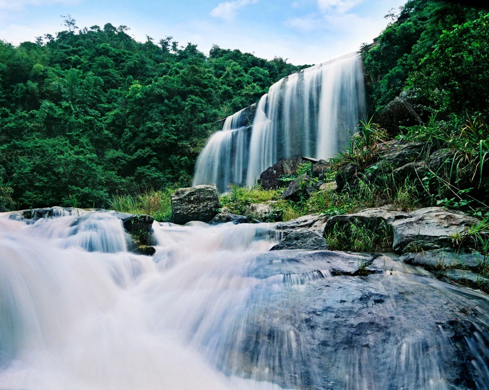

京溪园镇 京溪园，一个听起来就很“好看”的名字。正如它的名字一般，京溪园有号称啊”揭西第一“的旅游资源，尤其是响彻岭南的黄满寨瀑布。
黄满寨瀑布旅游区（国家 AAAA 级旅游景区）藏身于“广东最美丽乡村”——粗坑村，景区内终年满目苍翠，万木葱笼，狭谷巨石嶙峋多姿，鬼斧神工，省级地质公园在此落地。黄满寨瀑布落差300多米，景象蔚为壮观，享有“岭南第一瀑”的美誉。同时其著名京明度假村的游客数量逐年递增。
